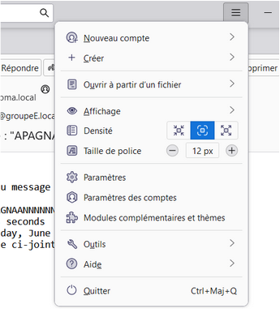
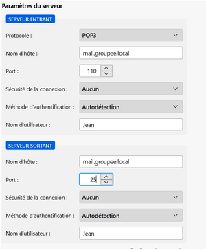

Installation d'un serveur TCP
Création des différents utilisateurs
On doit créer les différents utilisateurs qui ont besoin d'une boite mail. Pour cela, on exécute les commandes suivantes sur le serveur Linux:
Puis on lui attribue le mot de passe que l'on a choisi dans l'Active Directory.
Domaine MX
Pour que les mails puissent être envoyés et reçus, il faut configurer le domaine MX. Pour cela, on exécute les commandes suivantes sur le serveur Linux:
set q=mx
Installation de PostFix
On installe postfix pour permettre l'envoi de mail avec le protocole SMTP :
Pendant l'installation, on nous demande de donner un nom de domaine, ici ce nom est "groupeE.local".
Installation de dovecot
Pour pouvoir récupérer les mails, on installe dovecot :
apt install dovecot-pop3d
On change la ligne suivante dans le dossier /etc/dovecot/conf.d/10-auth.conf:
On change ensuite les droits du dossier mail pour que les utilisateurs puissent y accéder avec chmod 777 /var/mail
On redémarre ensuite le service dovecot avec systemctl restart dovecot
Connexion sur Thunderbird
Pour permettre aux utilisateurs de se connecter à leur boite mail, on utilise le logiciel Thunderbird.
On ajoute tout d'abord un nouveau compte en allant dans Paramètres des comptes -> Gestion des comptes -> Ajouter un compte de messagerie.

On renseigne ensuite l'adresse mail, le nom d'utilisateur et le mot de passe.
On clique ensuite sur Configuration manuel où on va spécifier le protocole POP3 avec le port 110
et le nom d'hôte du serveur mail.
